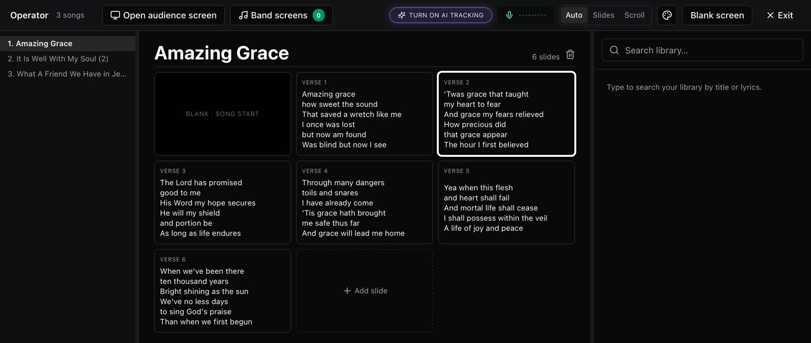
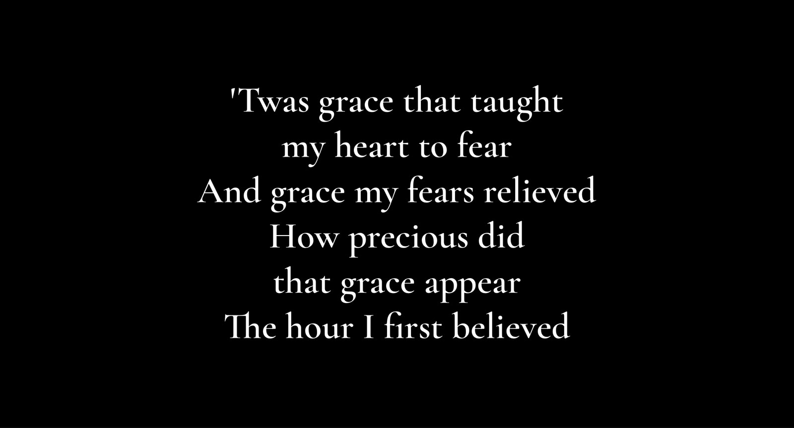

Church Slides
Worship slides that follow the band.
Church Slides puts song lyrics on the screen and moves them on as the band plays. It listens to the music, works out where you are in the song, and changes the slide with the timing of a good operator, even when the band repeats a chorus or skips a verse. You can take over by hand at any moment.
Opening it the first time? macOS blocks it until you allow it once. (about a minute).
Version 0.0.1, released 30 September 2026 (what’s new, and older versions) · Early preview for a small group of churches. Not sure which Mac you have? Apple menu → About This Mac: “Chip” means Apple silicon, “Processor” means Intel.
Version 0.0.4, for Windows 10 or 11 (64-bit). The Windows version is new and has only been tried on a handful of PCs, so expect rough edges and try it well before a service. Windows will say “Windows protected your PC” the first time: click More info, then Run anyway.


What it does
- Follows the song live. The app listens through a microphone or your sound desk and changes slides on its own, keeping up with repeats and changes of order.
- Song library and setlists. Import your songs, set each song’s usual order, and build a setlist for the service.
- Operator and projector screens. The congregation sees the lyrics; the operator sees every slide, can search, and can jump anywhere.
- Band screens. Musicians can see lyrics and chord charts on a tablet or laptop over the church Wi-Fi.
- Your team, online (preview). Sign in from Settings → Account to share your church’s songs and services between computers, and see chords or plan a service from a phone at app.churchslides.app. Accounts are being tried with a few churches; ask us to join.
- Your look. Choose the theme, font and text size, including a scrolling mode like an overhead projector.
- Works without the AI. Presenting by hand, the library and band screens all work with the AI switched off and with no internet.
System requirements
| Presenting by hand | macOS 10.15 Catalina or later, on an Intel or Apple silicon Mac. Windows 10 or 11, 64-bit (experimental). |
|---|---|
| Live AI: recommended |
An Apple silicon Mac (M1 or newer) on macOS 14 Sonoma or later, with 8 GB of memory or more. Speech recognition runs on the Mac’s graphics chip: in our tests it used about an eighth of one processor core and about 2 GB of memory, and never fell behind. |
| Live AI: works, with less to spare | Apple silicon on macOS 11 to 13, Intel Macs, and Windows PCs run speech recognition on the processor instead. It keeps up, but it keeps the processor busy (nearly two cores on an M1) and can fall behind when other apps are busy. You’ll want at least 4 processor cores, ideally 6 or more, and 8 GB of memory. On a 2-core computer the smallest speech model was right at its limit. |
| Live AI on a slower computer | Use online speech (Groq): recognition happens on Groq’s servers, so any computer that can present by hand will do. It needs a reliable internet connection for the whole service and a free Groq API key (Settings → AI that follows the songs). The app warns you if it thinks this computer is too slow. |
| Audio input | A microphone or a feed from the sound desk (for example through a USB audio interface). A clean desk feed gives the best results. |
| Internet | Needed once to download the speech model (a few hundred MB). After that, automatic slides work offline, unless you use online speech. Every release’s measured performance is on the changelog. |
| Error reports | When something goes wrong, the app sends the developers an error report: what went wrong, this computer’s model and the app’s recent log. Never audio, or anything said into the microphone. Turn it off in Settings → Error reports. |
| Second display | A projector or TV for the congregation. The operator view stays on the laptop screen. |
| Windows | Windows 10 or 11, 64-bit. Experimental: tried on only a few PCs so far. Live AI runs on the processor (see above), so a PC with 4 or more cores, or online speech, works best. |
| Linux | Not available yet. |
Installing
- Open the downloaded file and drag Church Slides into Applications. (On Windows, run the installer; see the warning above.)
- This preview isn’t notarised by Apple yet, so the first time you open it macOS will block it. Open System Settings → Privacy & Security, scroll down, and click Open Anyway next to Church Slides. On older macOS, right-click the app and choose Open.
- Allow microphone access when asked, so the app can listen to the band.
- In Settings → AI engine, click Download now while you have a connection, so the speech model is ready before Sunday.
Early preview. Please try it at a rehearsal before relying on it in a service, and keep someone at the laptop for the first few weeks. Feedback is very welcome.